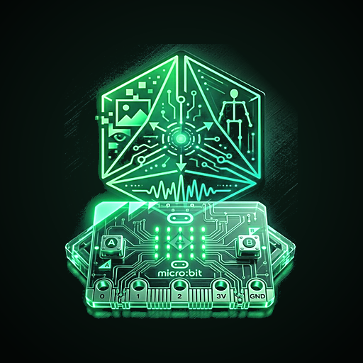

🌐 Carregar o canviar de model necessita Internet (el model es descarrega de Teachable Machine). Una vegada carregat, ja no cal.
Format amb probabilitats: classe1:90;classe2:5
Format sense: classe1;classe2
Teachable Microbit et permet utilitzar models d'intel·ligència artificial creats amb Google Teachable Machine i enviar les prediccions a una micro:bit per Bluetooth en temps real.
📖 Guia completa pas a pasCom funciona:
teachablemachine.withgoogle.com/models/WIQv36jWP/. El codi és la part final de l'enllaç (WIQv36jWP)Internet i mode avió:
Tipus de models compatibles:
Format de les dades enviades:
gat:87;gos:10;ocell:3gat;gos;ocell0 una sola vegada